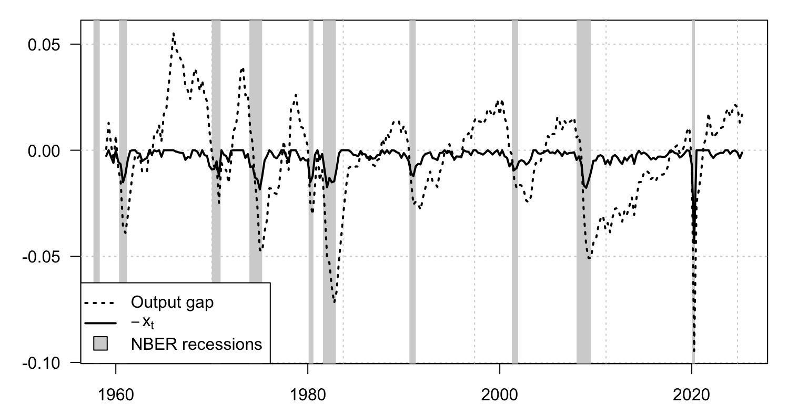
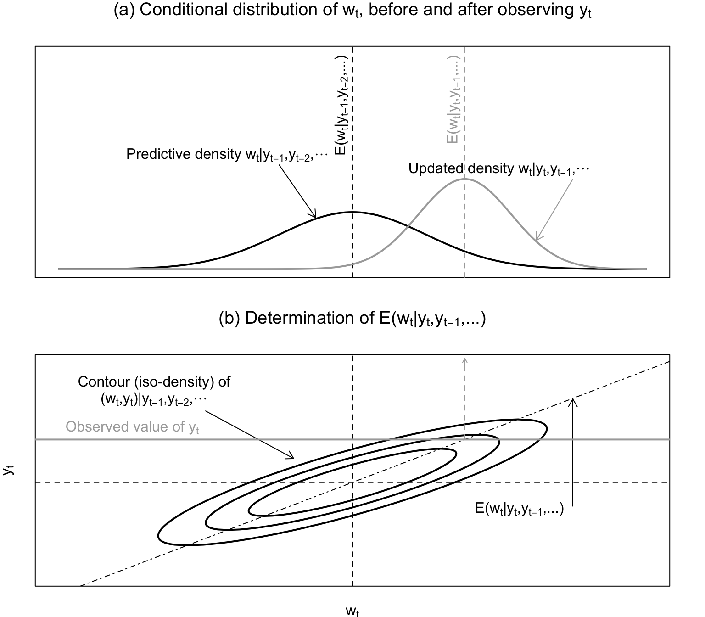
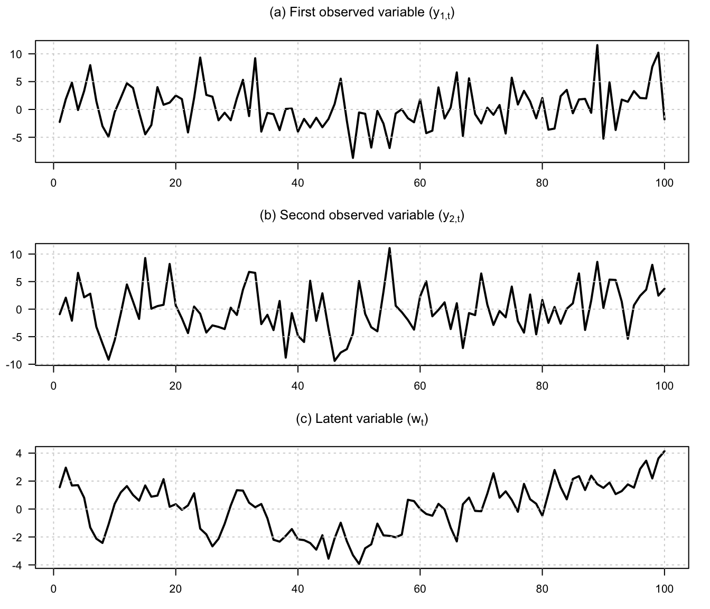
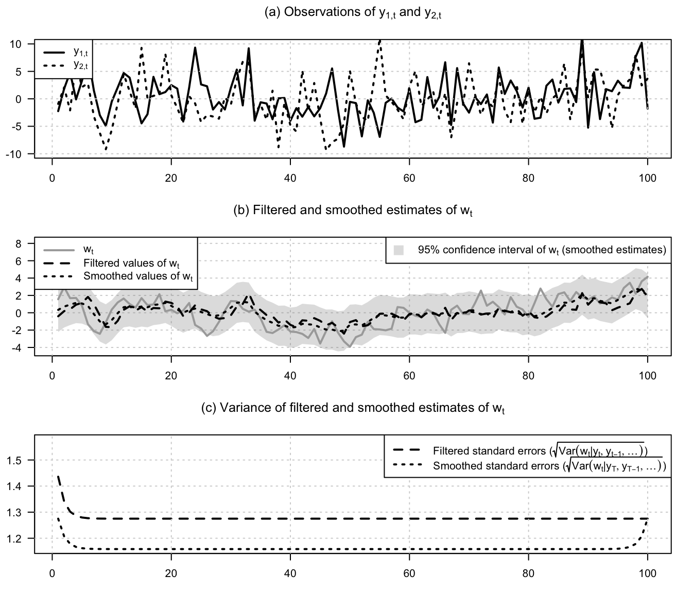
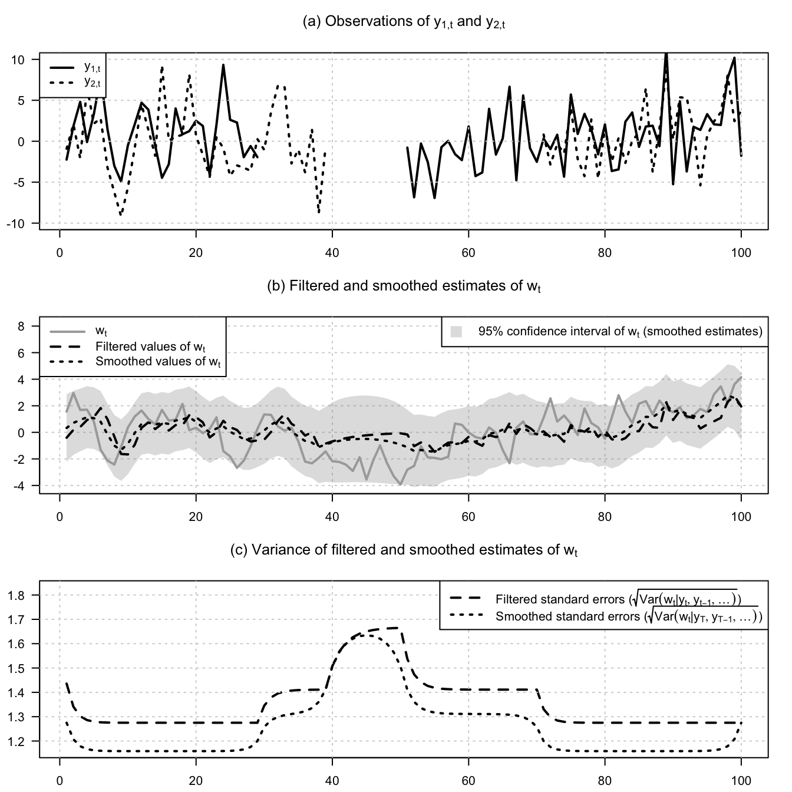
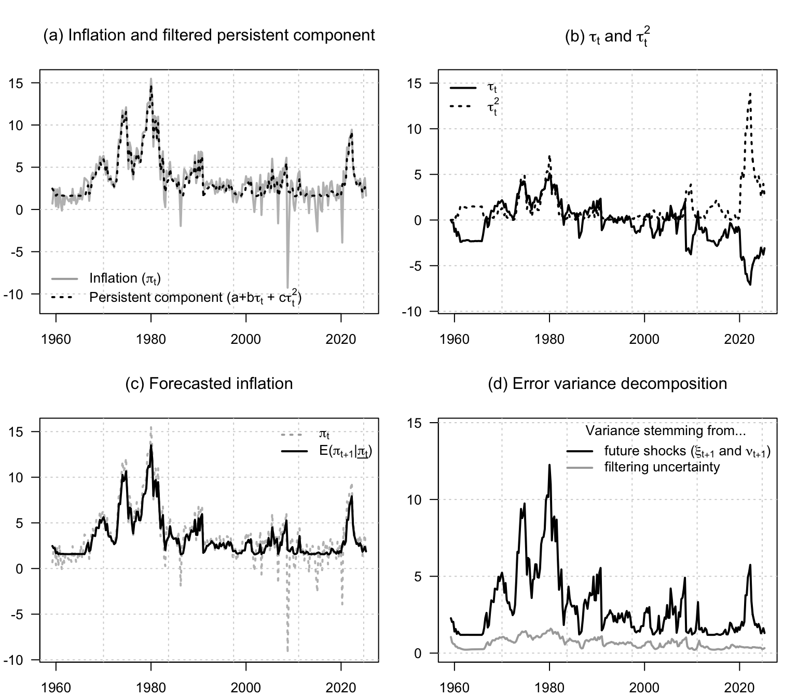
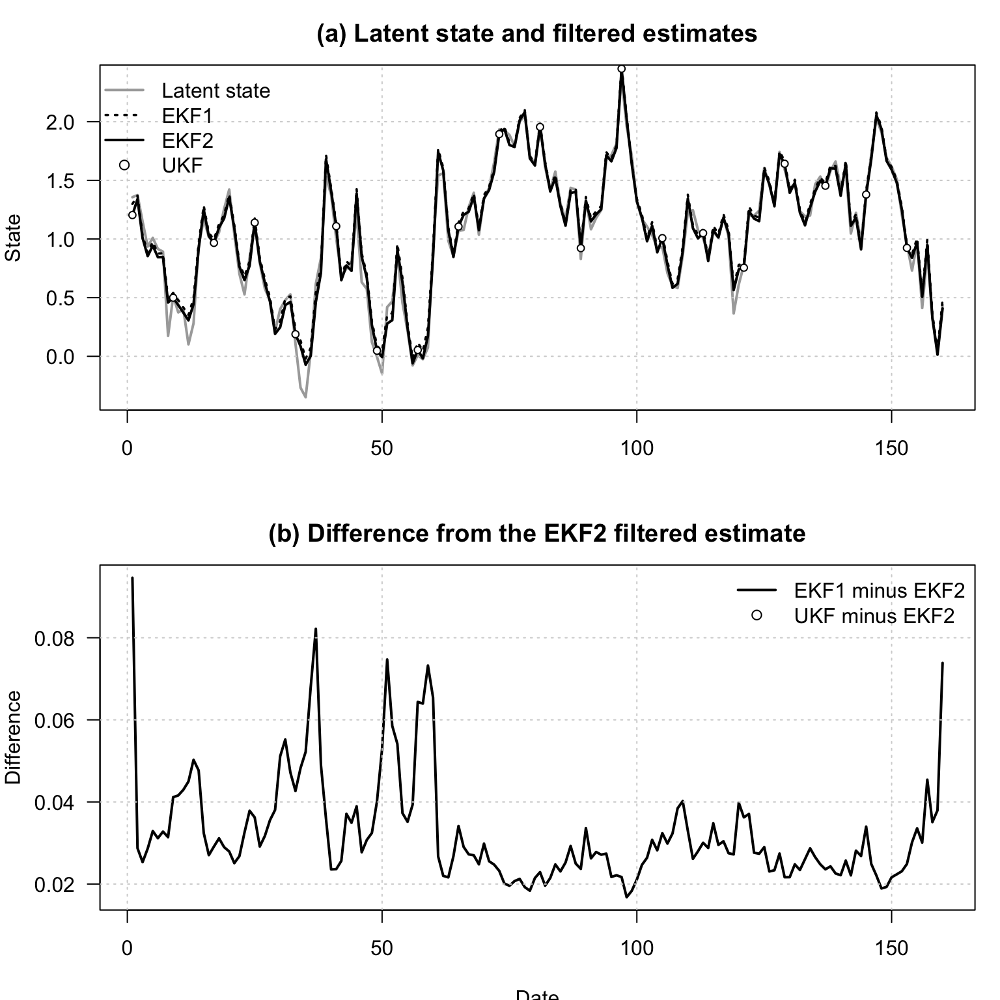
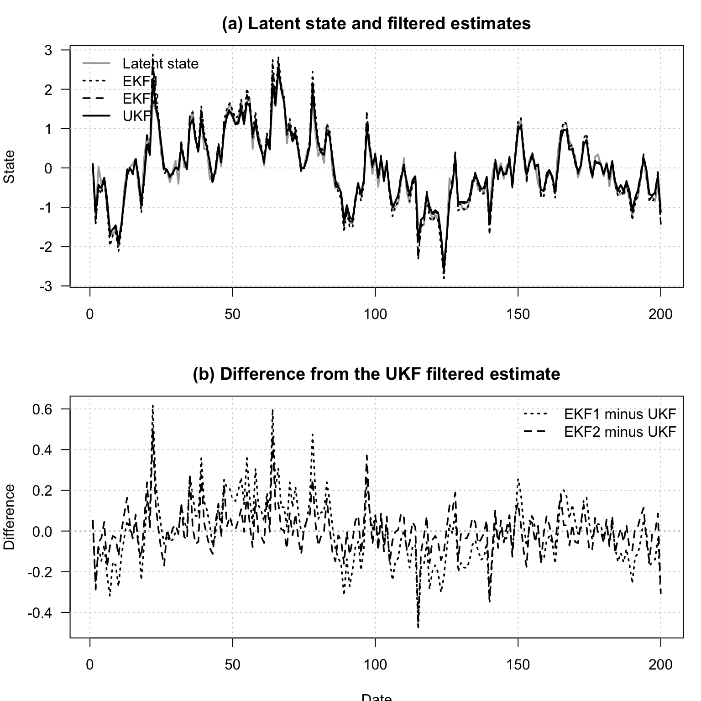
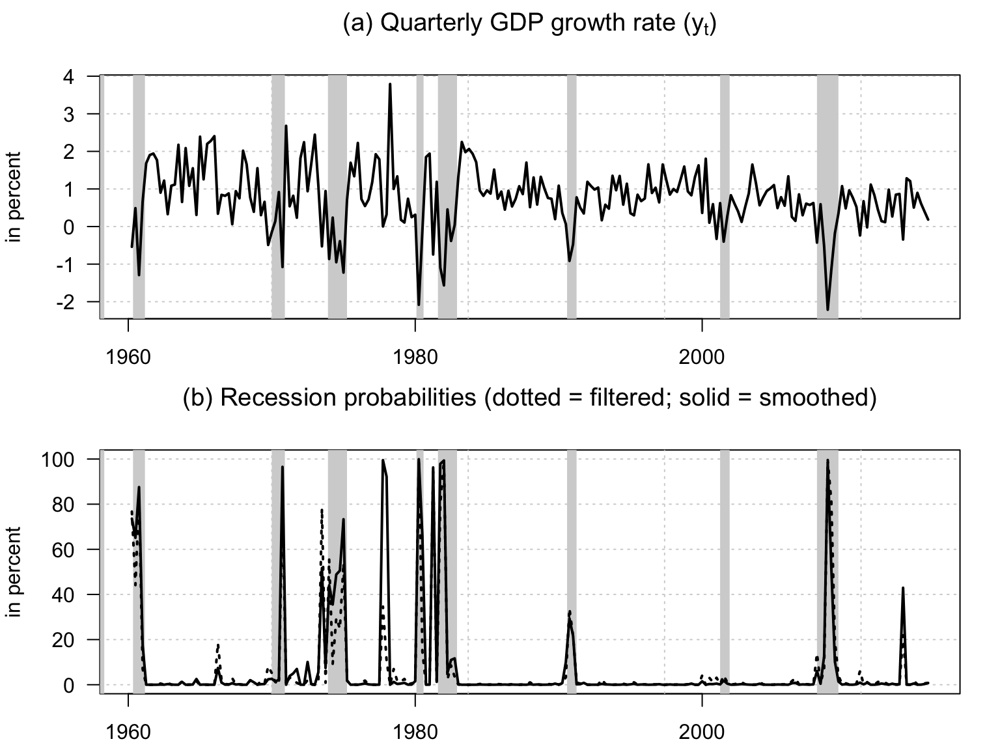

Chapter 14 Filtering
Indicate below whether the models’ parameterizations are re-estimated (otherwise), use pre-estimated parameters.
Code
14.1 Modified Kalman filter
This example extracts an output gap with the Kalman filter and compares it with standard indicators.
Code
# Purpose: This example extracts an output gap with the Kalman filter and compares it with
# standard indicators
library(DTAM)
library(tis) # for NBER recession dates
library(optimx)
logistic <- function(theta){
return(exp(theta)/(1+exp(theta)))
}
invlogistic <- function(theta){
return(log(theta/(1-theta)))
}
model2param <- function(model){
param <- matrix(0,6,1)
log(model$nu) -> param[1]
log(model$alpha) -> param[2]
log(model$mu) -> param[3]
invlogistic(model$betamu) -> param[4]
invlogistic(model$rho) -> param[5]
log(model$kappa) -> param[6]
log(model$sigma) -> param[7]
return(c(param))
}
param2model <- function(param){
nu <- exp(param[1])
alpha <- exp(param[2])
mu <- exp(param[3])
betamu <- logistic(param[4])
rho <- logistic(param[5])
kappa <- exp(param[6])
# sigma <- .002
sigma <- exp(param[7])
return(model=list(nu=nu,alpha=alpha,
mu=mu,betamu=betamu,
rho=rho,kappa=kappa,
sigma=sigma))
}
Qf_ARG0 <- function(model,rho,t){
nu <- model$nu
alpha <- model$alpha
mu <- model$mu
betamu <- model$betamu
sigma <- model$sigma
aux <- mu^2*(nu+2*alpha) + 2*mu*betamu*rho[1]
Q <- matrix(c(aux,-aux,-aux,aux+sigma^2),2,2)
return(Q)
}
Y <- matrix(
log(Data_Macro_US_quarterly$GDPC1/Data_Macro_US_quarterly$GDPPOT),
ncol=1)
model <- list(
nu = .02,
alpha = .02,
mu = .01,
betamu = .8,
rho = .6,
kappa = .03*(1-.6),
sigma = .005
)
param <- model2param(model)
run_KF <- function(model,Y){
TT <- dim(Y)[1]
nu_t <- t(matrix(c(model$mu*(model$nu + model$alpha),
-model$mu*(model$nu + model$alpha) + model$kappa),2,TT))
H <- matrix(c(model$betamu,-model$betamu,
0,model$rho),2,2)
M <- matrix(0.0000001,1,1)
rho_0 <- solve(diag(2)-H) %*% nu_t[1,]
AUX <- Qf_ARG0(model,rho_0)
Sigma_0 <- matrix(solve(diag(4) - H %x% H) %*% c(AUX),2,2)
G <- matrix(c(-1,1),1,2)
mu_t <- matrix(0,TT,1)
N <- model
res_KF <- Kalman_filter(Y, nu_t, H, N, mu_t, G, M, Sigma_0, rho_0,
indic_pos = c(1,0),
Qfunction = Qf_ARG0)
return(res_KF)
}
loglik4optim <- function(param,Y){
model <- param2model(param)
res_KF <- run_KF(model,Y)
return(-res_KF$loglik)
}
param_est <- model2param(model)
if(indic_reestim){
nb_loop <- 2
for(i in 1:nb_loop){
print(paste("--- Loop ",i," ---",sep=""))
# for(method in c("nlminb")){
for(method in c("nlminb","Nelder-Mead")){
res.optim <- optimx(par=param_est,
fn=loglik4optim,
Y=Y,
method=method,
control=list(trace=TRUE,
maxit=ifelse(method=="Nelder-Mead",1000,20),
kkt = FALSE))
print(paste("--- Log-lik (",method,"): ",round(res.optim$value,2)," ---",sep=""))
param_est <- c(as.matrix(res.optim)[1:length(param_est)])
}
}
save(param_est,file= "stored_results/param_ARG0.Rdat")
}else{
# In that case, use paraemters estimated previously:
load(file= "stored_results/param_ARG0.Rdat")
}
model <- param2model(param_est)
res_KF <- run_KF(model,Y)
w1 <- res_KF$r[,1]
stdv_w1 <- sqrt(res_KF$Sigma_tt[,1])
lower_bound <- -w1 - 1.64*stdv_w1
upper_bound <- -w1 + 1.64*stdv_w1
par(plt=c(.1,.95,.1,.95))
plot(Data_Macro_US_quarterly$date,Y,type="l",col="white",las=1,
xlab="",ylab="")
grid()
make_recessions(col = "lightgrey")
# polygon(c(Data_Macro_US_quarterly$date,rev(Data_Macro_US_quarterly$date)),
# c(lower_bound,rev(upper_bound)),col="grey",border = NaN)
lines(Data_Macro_US_quarterly$date,Y,lwd=2,col="black",lty=3)
lines(Data_Macro_US_quarterly$date,
-w1,col="black",lwd=2)
legend("bottomleft",
legend=c("Output gap",
expression(-x[t]),
"NBER recessions"),
lty=c(3, 1, NA), # line type
pch=c(NA, NA, 22), # filled squares
pt.bg = c(NA, NA, "lightgrey"), # fill
pt.cex = 2,
col = c("black", "black", "black"), # border
lwd = c(2,2,1),
bg = "white")
14.2 Kalman filter
The following figure illustrates the updating step of the Kalman algorithm:
14.2.1 The mechanics of the linear Kalman filter in a simple state-space model
This example illustrates the mechanics of the linear Kalman filter in a simple state-space model.
Code
# Purpose: This example illustrates the mechanics of the linear Kalman filter in a simple
# state-space model
# library(DTAM)
rho <- .8
var <- .4
xhat <- NaN
sigma <- 2
Sigma <- sigma*matrix(c(1,rho,rho,1),2,2)
# Generate a bivariate cloud used to draw the filtering geometry.
library(cluster)
x <- 2*rnorm(1000)
y <- rnorm(1000) + 2*x + 10
xy <- unname(cbind(x, y))
exy <- ellipsoidhull(xy)
rho <- .85
coef <- .85
exy$loc <- c(2,2)
par(mfrow= c(2,1))
layout(matrix(c(1,2)), heights=c(2, 2))
par(plt=c(.05,.95,.1,.85))
x <- seq(-2,6,by=.05)
# Draw the predictive density before observing the new signal.
plot(0,0,col='white',
xlim=c(-2,6),
ylim=c(0,1.5),ylab="",xlab="",xaxt="n",yaxt="n",
main=expression(paste("(a) Conditional distribution of ", w[t],
", before and after observing ", y[t], sep = "")))
sigma <- 1
Sigma <- sigma*matrix(c(1,rho,rho,1),2,2)
sigmax <- sqrt(Sigma[1,1])
Ex <- 2
x <- seq(-2,6,by=.05)
densx <- 1/sqrt(2*pi*sigmax^2)*exp(-.5*(x-Ex)^2/sigmax^2)
lines(x,densx,col='black',lwd=2)
abline(v=exy$loc[2],lty=2)
arrows(1,.73,1.5,.36,length=.1,col="black")
text(.3,.8,expression(paste("Predictive density ",w[t],"|",y[t-1],",",y[t-2],",",...,sep="")))
abline(v=xhat,lty=2,col="dark grey")
sigmax <- sqrt(var)
y <- 3.8
xhat <- 2 + coef*(y-2)
x <- seq(-2,6,by=.05)
densx <- 1/sqrt(2*pi*sigmax^2)*exp(-.5*(x-xhat)^2/sigmax^2)
# Add the updated density after observing the signal.
lines(x,densx,lwd=2,col="dark grey")
arrows(5,.63,4.5,.2,length=.1,col="dark grey")
text(4,.7,expression(paste("Updated density ",w[t],"|",y[t],",",y[t-1],",",...,sep="")))
abline(v=xhat,lty=2,col="dark grey")
text(x = Ex, y = 1.5,
labels = expression(paste(E, "(", w[t], "|",
y[t-1], ",", y[t-2], ",...)", sep = "")),
pos = 2, srt = 90)
text(x = xhat, y = 1.5,
labels = expression(paste(E, "(", w[t], "|",
y[t], ",", y[t-1], ",...)", sep = "")),
pos = 2, srt = 90, col = "dark grey")
par(plt=c(.05,.95,.1,.85))
x <- seq(-2,6,by=.05)
sigma0 <- .5
Sigma <- sigma*matrix(c(1,rho,rho,1),2,2)
plot(0,0,col="white",xlim=c(-2,6),ylim = c(-2,7),lwd=2,xlab="",
ylab="",xaxt="n",yaxt="n",
main=expression(paste("(b) Determination of ",E,"(",w[t],"|",y[t],",",y[t-1],",...)",sep="")))
mtext(expression(w[t]),side=1,line=1)
mtext(expression(y[t]),side=2,line=1)
sigma <- 1
Sigma <- sigma*matrix(c(1,rho,rho,1),2,2)
exy$cov <- Sigma
lines(predict(exy),lwd=2)
abline(h=exy$loc[1],lty=2)
abline(v=exy$loc[2],lty=2)
sigma <- 2
Sigma <- sigma*matrix(c(1,rho,rho,1),2,2)
exy$cov <- Sigma
lines(predict(exy),type='l',lwd=2)
sigma <- 3.5
Sigma <- sigma*matrix(c(1,rho,rho,1),2,2)
exy$cov <- Sigma
lines(predict(exy),type='l',lwd=2)
arrows(0,5,1.2,3,length=.1)
text(-.7,6.2,"Contour (iso-density) of")
text(-.7,5.5,expression(paste("(",w[t],",",y[t],")","|",y[t-1],",",y[t-2],",",...,sep="")))
sigma <- 1
Sigma <- sigma*matrix(c(1,rho,rho,1),2,2)
coef <- Sigma[2,1]*(1/Sigma[1,1])
var <- Sigma[2,2] - Sigma[2,1]*(1/Sigma[1,1])*Sigma[1,2]
Y <- seq(-10,10,by=.05)
lines(2+coef*(Y-2),Y,col="black",lwd=1,lty=4)
arrows(5,1,5,5.5,length=.1,col="black")
text(5, .8,
expression(paste(E, "(", w[t], "|",
y[t], ",", y[t-1], ",...)", sep = "")),
pos = 2, col = "black")
abline(h=y,col="dark grey",lwd=2)
text(-1,y+.5,expression(paste("Observed value of ",y[t],sep="")),col="dark grey")
lines(c(xhat,xhat),c(y,7),col="dark grey",lty=2)
arrows(xhat,6.8,xhat,7.2,col="dark grey",length=.05)
14.2.2 Filtered and smoothed estimates in a multivariate Gaussian system
This example shows filtered and smoothed estimates in a multivariate Gaussian state-space system.
Code
# Purpose: This example shows filtered and smoothed estimates in a multivariate Gaussian
# state-space system
library(DTAM)
set.seed(123)
# Set model specifications:
alpha1 <- 0 # if we had autoregressive y_1
alpha2 <- 0 # if we had autoregressive y_2
Alpha <- diag(c(alpha1,alpha2))
sigma1 <- 4
sigma2 <- 4
D <- matrix(c(sigma1,0,0,sigma2),2,2)
beta1 <- 1
beta2 <- 1
Gamma <- matrix(c(beta1,beta2),2,1)
phi <- .8
# Simulate model:
T <- 100
Y <- NULL;X <- NULL
Alpha.Y_1 <- NULL
y <- c(0,0);x <- 0
for(i in 1:T){
Alpha.Y_1 <- rbind(Alpha.Y_1,c(Alpha %*% y))
y <- Alpha %*% y + Gamma * x + D %*% rnorm(2)
x <- phi * x + rnorm(1)
Y <- rbind(Y,t(y));X <- rbind(X,x)
}
# Define matrices needed in the Kalman_filter procedures:
nu_t <- matrix(0,T,1)
H <- phi
G <- Gamma
mu_t <- Alpha.Y_1
N <- 1
M <- D
Sigma_0 <- 1/(1-phi^2) # unconditional variance of w
rho_0 <- 0 # unconditional mean of w
filter.res <- Kalman_filter(Y,nu_t,H,N,mu_t,G,M,Sigma_0,rho_0)
smoother.res <- Kalman_smoother(Y,nu_t,H,N,mu_t,G,M,Sigma_0,rho_0)
par(mfrow=c(3,1))
par(plt=c(.05,.97,.2,.8))
par(mfrow=c(3,1))
plot(Y[,1],type="l",lwd=2,xlab="",ylab="",las=1,
main=expression(paste("(a) First observed variable (",y[1*","*t],")",sep="")))
grid()
plot(Y[,2],type="l",lwd=2,xlab="",ylab="",las=1,
main=expression(paste("(b) Second observed variable (",y[2*","*t],")",sep="")))
grid()
plot(X,type="l",lwd=2,xlab="",ylab="",las=1,
main=expression(paste("(c) Latent variable (",w[t],")",sep="")))
grid()
14.2.3 Latent-state recovery under alternative measurement equations
This example studies latent-state recovery under alternative measurement equations.
Code
# Purpose: This example studies latent-state recovery under alternative measurement equations
# Plot the observed signals.
par(mfrow=c(3,1))
par(plt=c(.05,.97,.2,.8))
plot(Y[,1],type="l",lwd=2,xlab="",ylab="",las=1,
main=expression(paste("(a) Observations of ",
y[1*","*t]," and ",y[2*","*t],sep="")),
ylim=c(-10,10))
grid()
lines(Y[,2],type="l",lwd=2,lty=3)
legend("topleft",
c(expression(paste(y[1*","*t],sep="")),
expression(paste(y[2*","*t],sep=""))),
lwd=c(2), # line width
lty=c(1,3),
bg = "white")
# lower_bound <- filter.res$r - 2*sqrt(filter.res$Sigma_tt)
# upper_bound <- filter.res$r + 2*sqrt(filter.res$Sigma_tt)
lower_bound <- smoother.res$r - 2*sqrt(smoother.res$S_smooth)
upper_bound <- smoother.res$r + 2*sqrt(smoother.res$S_smooth)
# Plot true, filtered, and smoothed states with uncertainty bands.
plot(X,type="l",lwd=2,xlab="",ylab="",col="white",las=1,
ylim=c(min(lower_bound),1.6*max(upper_bound)),
main=expression(paste("(b) Filtered and smoothed estimates of ",w[t],sep="")))
grid()
polygon(c(1:T,T:1),c(lower_bound,rev(upper_bound)),col="#88888844",border = NaN)
lines(X,lwd=2,col="dark grey",lty=1)
lines(filter.res$r,col="black",lwd=2,lty=2)
lines(smoother.res$r,col="black",lwd=2,lty=3)
legend("topleft",
c(expression(w[t]),
expression(paste("Filtered values of ",w[t],sep="")),
expression(paste("Smoothed values of ",w[t],sep=""))),
lwd=c(2), # line width
lty=c(1,2,3),
col=c("dark grey","black","black"), # gives the legend lines the correct color and width
seg.len = 3,
bg = "white"
)
legend("topright",
c(expression(paste("95% confidence interval of ",w[t]," (smoothed estimates)",sep=""))),
lwd=c(NaN), # line width
lty=c(NaN),
pch=15,
pt.cex=2,
col=c(col="#88888844"),
bg = "white"
)
# Compare filtered and smoothed standard errors.
plot(sqrt(filter.res$Sigma_tt),type="l",lty=2,
lwd=2,xlab="",ylab="",col="black",
ylim=c(min(sqrt(smoother.res$S_smooth)),1.1*max(sqrt(filter.res$Sigma_tt))),las=1,
main=expression(paste("(c) Variance of filtered and smoothed estimates of ",w[t],sep="")))
grid()
lines(sqrt(smoother.res$S_smooth),lwd=2,col="black",lty=3)
legend("topright",
c(expression(paste("Filtered standard errors (",
sqrt(Var(w[t]*"|"*y[t], y[t-1], ...)), ")", sep = "")),
expression(paste("Smoothed standard errors (",
sqrt(Var(w[t]*"|"*y[T], y[T-1], ...)), ")", sep = ""))
),
lwd=c(2), # line width
lty=c(2,3),
col=c("black","black"),
seg.len = 3,
bg = "white"
)
14.2.4 A richer affine term-structure filtering exercise
This example illustrates a richer affine term-structure filtering exercise.
Code
# Purpose: This example illustrates a richer affine term-structure filtering exercise
# Introduce missing observations in both measurement equations.
Y.modif <- Y
Y.modif[30:50,1] <- NaN
Y.modif[40:70,2] <- NaN
# Call of Kalman filter and smoother:
filter.res <- Kalman_filter(Y.modif,nu_t,H,N,mu_t,
G,M,Sigma_0,rho_0)
smoother.res <- Kalman_smoother(Y.modif,nu_t,H,N,mu_t,
G,M,Sigma_0,rho_0)
# Plot observations, recovered states, and uncertainty under missing data.
par(mfrow=c(3,1))
par(plt=c(.05,.97,.13,.8))
plot(Y.modif[,1],type="l",lwd=2,xlab="",ylab="",las=1,
main=expression(paste("(a) Observations of ",
y[1*","*t]," and ",y[2*","*t],sep="")),
ylim=c(-10,10))
grid()
lines(Y.modif[,2],type="l",lwd=2,lty=3)
legend("topleft",
c(expression(paste(y[1*","*t],sep="")),
expression(paste(y[2*","*t],sep=""))),
lwd=c(2), # line width
lty=c(1,3),
bg = "white")
# lower_bound <- filter.res$r - 2*sqrt(filter.res$Sigma_tt)
# upper_bound <- filter.res$r + 2*sqrt(filter.res$Sigma_tt)
lower_bound <- smoother.res$r - 2*sqrt(smoother.res$S_smooth)
upper_bound <- smoother.res$r + 2*sqrt(smoother.res$S_smooth)
plot(X,type="l",lwd=2,xlab="",ylab="",col="white",las=1,
ylim=c(min(lower_bound),1.6*max(upper_bound)),
main=expression(paste("(b) Filtered and smoothed estimates of ",w[t],sep="")))
grid()
polygon(c(1:T,T:1),c(lower_bound,rev(upper_bound)),col="#88888844",border = NaN)
lines(X,lwd=2,col="dark grey",lty=1)
lines(filter.res$r,col="black",lwd=2,lty=2)
lines(smoother.res$r,col="black",lwd=2,lty=3)
legend("topleft",
c(expression(w[t]),
expression(paste("Filtered values of ",w[t],sep="")),
expression(paste("Smoothed values of ",w[t],sep=""))),
lwd=c(2), # line width
lty=c(1,2,3),
col=c("dark grey","black","black"), # gives the legend lines the correct color and width
seg.len = 3,
bg = "white"
)
legend("topright",
c(expression(paste("95% confidence interval of ",w[t]," (smoothed estimates)",sep=""))),
lwd=c(NaN), # line width
lty=c(NaN),
pch=15,
pt.cex=2,
col=c(col="#88888844"),
bg = "white"
)
plot(sqrt(filter.res$Sigma_tt),type="l",lty=2,
lwd=2,xlab="",ylab="",col="black",
ylim=c(min(sqrt(smoother.res$S_smooth)),1.1*max(sqrt(filter.res$Sigma_tt))),las=1,
main=expression(paste("(c) Variance of filtered and smoothed estimates of ",w[t],sep="")))
grid()
lines(sqrt(smoother.res$S_smooth),lwd=2,col="black",lty=3)
legend("topright",
c(expression(paste("Filtered standard errors (",
sqrt(Var(w[t]*"|"*y[t], y[t-1], ...)), ")", sep = "")),
expression(paste("Smoothed standard errors (",
sqrt(Var(w[t]*"|"*y[T], y[T-1], ...)), ")", sep = ""))
),
lwd=c(2), # line width
lty=c(2,3),
col=c("black","black"),
seg.len = 3,
bg = "white"
)
14.3 Quadratic Kalman Filter
This example compares quadratic filtering with the linear Gaussian benchmark.
Code
# Purpose: This example compares quadratic filtering with the linear Gaussian benchmark
library(DTAM)
library(optimx)
data <- Data_Macro_US_quarterly
period_per_year <- 4
TT <- dim(data)[1]
k <- 1
infl <- c(rep(NaN,k),
(period_per_year*100/k)*log(data$CPIAUCSL[(k+1):TT]/
data$CPIAUCSL[1:(TT-k)]))
data$infl <- infl
Y_t <- matrix(data$infl[(k+1):TT],ncol=1)
vec_dates <- data$date[(k+1):TT]
make_StateSpace <- function(param){
c <- exp(param[3])
b <- param[2]
a <- -5 + b^2/(4*c) - exp(param[1])
alpha <- param[4]
beta <- param[5]
rho <- exp(param[6])/(1+exp(param[6]))
A <- a
B <- matrix(c(b,alpha),nrow=1)
C <- array(c(c,beta,0,0),c(2,2,1))
mu = matrix(0,2,1)
Phi <- diag(c(rho,0))
Sigma <- diag(2)
M <- .00001
return(list(A=A,B=B,C=C,mu=mu,Phi=Phi,Sigma=Sigma,M=M))
}
rho <- .8
stdv_tau <- 1/sqrt(1-rho^2)
b <- sd(Y_t)/stdv_tau
c <- 0.03
a <- -5 + b^2/(4*c) - 0.5
alpha <- .3*sd(Y_t)
beta <- 0.1
param <- c(log(-5 + b^2/(4*c) - a),b,log(c),alpha,beta,log(rho/(1-rho)))
loglik_QKF <- function(param,Y_t=Y_t){
QStateSpace <- make_StateSpace(param)
resQKF <- QKF(Y_t,QStateSpace)
return(-resQKF$loglik)
}
if(indic_reestim){
nb_loop <- 3
for(i in 1:nb_loop){
print(paste("--- Loop ",i," ---",sep=""))
for(method in c("Nelder-Mead","nlminb")){
res.optim <- optimx(par=param,
fn=loglik_QKF,
Y_t = Y_t,
method=method,
control=list(trace=TRUE,
maxit=ifelse(method=="Nelder-Mead",300,30),
kkt = FALSE))
print(paste("--- Log-lik (",method,"): ",round(res.optim$value,2)," ---",sep=""))
param <- c(as.matrix(res.optim)[1:length(param)])
}
}
param_est <- param
save(param,
file= paste("stored_results/param_QKF.Rdat",sep=""))
}else{
load(file=paste("stored_results/param_QKF.Rdat",sep=""))
}
QStateSpace <- make_StateSpace(param)
resQKF <- QKF(Y_t,QStateSpace,indic_reconciliation = TRUE)
par(mfrow=c(2,2))
par(plt=c(.1,.95,.1,.8))
plot(vec_dates,Y_t,col="white",xlab="",ylab="",las=1,
ylim=c(range(Y_t)-c(2,0)),
main=expression(paste("(a) Inflation and filtered persistent component",sep="")))
grid()
lines(vec_dates,Y_t,col="grey",lwd=2)
legend("bottomleft",
legend=c(expression(paste("Inflation (",pi[t],")",sep="")),
expression(paste("Persistent component (a+b",tau[t]," + c",tau[t]^2,")",sep=""))),
lty=c(1,3),
col=c("dark grey","black"),
lwd=c(2,2),bty = "n")
n <- 2
vec_b_x_tau <- matrix(0,n+n*(n+1)/2,1)
vec_b_x_tau[1] <- resQKF$B_tilde[1]
vec_c_x_tau2 <- matrix(0,n+n*(n+1)/2,1)
vec_c_x_tau2[3] <- resQKF$B_tilde[3]
b_x_tau <- resQKF$r %*% vec_b_x_tau
c_x_tau2 <- resQKF$r %*% vec_c_x_tau2
fitted <- resQKF$A + b_x_tau + c_x_tau2
lines(vec_dates,fitted,col="black",lty=3,lwd=2)
plot(vec_dates,Y_t,col="white",xlab="",ylab="",las=1,
ylim=range(c(resQKF$r[,1],resQKF$r[,3]),finite=TRUE),
main=expression(paste("(b) Estimates of ",tau[t]," and ",tau[t]^2,sep="")))
grid()
stdv_b_x_tau <- sqrt(resQKF$Sigma_tt %*% (vec_b_x_tau %x% vec_b_x_tau))
stdv_c_x_tau2 <- sqrt(resQKF$Sigma_tt %*% (vec_c_x_tau2 %x% vec_c_x_tau2))
# Confidence interval for b x tau:
# lower_bound <- b_x_tau - qnorm(.975)*stdv_b_x_tau
# upper_bound <- b_x_tau + qnorm(.975)*stdv_b_x_tau
# polygon(c(vec_dates,rev(vec_dates)),c(lower_bound,rev(upper_bound)),
# border = NA, col="#33333344")
# Confidence interval for c x tau^2:
# lower_bound <- c_x_tau2 - qnorm(.975)*stdv_c_x_tau2
# upper_bound <- c_x_tau2 + qnorm(.975)*stdv_c_x_tau2
# polygon(c(vec_dates,rev(vec_dates)),c(lower_bound,rev(upper_bound)),
# border = NA, col="#33333344")
lines(vec_dates,resQKF$r[,1],col="black",lwd=2)
lines(vec_dates,resQKF$r[,3],col="black",lwd=2,lty=3)
legend("topleft",
legend=c(expression(tau[t]),
expression(tau[t]^2)),
lty=c(1,3),
col=c("black","black"),
lwd=c(2,2),bty = "n")
pi_tp1_t <- c(resQKF$A) + resQKF$r %*% t(resQKF$Phi_tilde_red) %*% t(resQKF$B_tilde)
plot(vec_dates,Y_t,type="l",col="grey",lty=3,lwd=2,xlab="",ylab="",las=1,
main=expression(paste("(c) Forecasted inflation",sep="")))
grid()
lines(vec_dates,pi_tp1_t,col="black",lwd=2)
legend("topright",
legend=c(expression(pi[t]),
expression(paste("E(",pi[t+1],"|",underline(pi[t]),")",sep=""))),
lty=c(3,1),
col=c("darkgrey","black"),
lwd=c(2,2),bty = "n")
# First component of conditional variance of pi_{t+1} ('epsilon' uncertainty):
P_tp1_t <- resQKF$r %*% t(resQKF$Psi_red) +
matrix(1,dim(Y_t)[1],1) %*% t(resQKF$nu_red)
var_pi_epsilon <- apply((matrix(1,dim(Y_t)[1],1) %*% (resQKF$B_tilde %x% resQKF$B_tilde)) *
P_tp1_t,1,sum)
# Second component of conditional variance of pi_{t+1} (filtering uncertainty)
B_Phi <- resQKF$B_tilde%*%resQKF$Phi_tilde_red
var_pi_filtering_uncert <-
apply((matrix(1,dim(Y_t)[1],1) %*% (B_Phi %x% B_Phi)) * resQKF$Sigma_tt,1,sum)
plot(vec_dates,var_pi_epsilon,ylim=c(0,1.2*max(var_pi_epsilon)),
col="white",xlab="",ylab="",las=1,
main=expression(paste("(d) Error variance decomposition",sep="")))
grid()
lines(vec_dates,var_pi_epsilon,lwd=2)
lines(vec_dates,var_pi_filtering_uncert,col="darkgrey",lwd=2)
legend("topright",
title="Variance stemming from...",
legend=c(expression(paste("future shocks (",xi[t+1]," and ",nu[t+1],")",sep="")),
expression(paste("filtering uncertainty",sep=""))),
lty=c(1,1),
col=c("black","darkgrey"),
lwd=c(2,2),bty = "n")
14.4 Extended and Unscented Kalman filters
The following online-only examples compare the first-order Extended Kalman Filter (EKF1), the second-order Extended Kalman Filter (EKF2), and the Unscented Kalman Filter (UKF). The first example is deliberately quadratic: it isolates the second-order correction and provides a benchmark in which EKF2 and the UKF coincide. The second example uses a cubic measurement function to illustrate that this equivalence does not extend to general nonlinear models.
14.4.1 A quadratic benchmark
Consider the scalar state-space model \[ x_t = 0.18 + 0.85x_{t-1} + \varepsilon_t, \qquad y_t = x_t + x_t^2 + \eta_t, \] where \(\varepsilon_t\sim\mathcal{N}(0,0.30^2)\) and \(\eta_t\sim\mathcal{N}(0,0.20^2)\). EKF1 uses only the slope of the measurement function. EKF2 also uses its Hessian and therefore corrects the predictive measurement mean and variance for curvature.
Because the transition is affine and the measurement function is exactly quadratic, EKF2 computes the exact measurement moments under each Gaussian predictive approximation. With the parameters used below, the unscented transform reproduces the same moments. EKF2 and the UKF should consequently coincide up to numerical precision; their comparison with EKF1 isolates the effect of the second-order correction.
Code
# Purpose: Compare EKF1, EKF2, and UKF in a nonlinear measurement model.
library(DTAM)
set.seed(2026)
TT <- 160
phi <- 0.85
intercept <- 0.18
curvature <- 1.00
state.sd <- 0.30
measurement.sd <- 0.20
transition <- function(x, t) intercept + phi * x
transition.jacobian <- function(x, t) matrix(phi)
measurement <- function(x, t) x + curvature * x^2
measurement.jacobian <- function(x, t) matrix(1 + 2 * curvature * x)
measurement.hessian <- function(x, t) matrix(2 * curvature)
# Simulate the latent state and the nonlinear signal.
state <- observation <- numeric(TT)
previous.state <- intercept / (1 - phi)
for (t in seq_len(TT)) {
state[t] <- transition(previous.state, t) + rnorm(1, sd = state.sd)
observation[t] <- measurement(state[t], t) +
rnorm(1, sd = measurement.sd)
previous.state <- state[t]
}
Y <- matrix(observation)
Q <- matrix(state.sd^2)
R <- matrix(measurement.sd^2)
x0 <- intercept / (1 - phi)
P0 <- matrix(state.sd^2 / (1 - phi^2))
fit.ekf1 <- EKF1(
Y, transition, measurement,
transition.jacobian, measurement.jacobian,
Q, R, x0, P0
)
fit.ekf2 <- EKF2(
Y, transition, measurement,
transition.jacobian, measurement.jacobian, measurement.hessian,
Q, R, x0, P0
)
fit.ukf <- UKF(
Y, transition, measurement, Q, R, x0, P0,
alpha = 0.5, beta = 2, kappa = 0
)
par(mfrow = c(2, 1), mar = c(3.6, 4.0, 2.6, 1.0))
# The UKF points lie on the EKF2 line in this quadratic example.
plot(state, type = "l", col = "darkgrey", lwd = 2,
xlab = "", ylab = "State",
main = "(a) Latent state and filtered estimates", las = 1)
grid()
lines(fit.ekf1$filtered.mean[, 1], lty = 3, lwd = 1.8)
lines(fit.ekf2$filtered.mean[, 1], lwd = 2)
ukf.dates <- seq(1, TT, by = 8)
points(ukf.dates, fit.ukf$filtered.mean[ukf.dates, 1],
pch = 21, bg = "white", cex = 0.75)
legend(
"topleft",
legend = c("Latent state", "EKF1", "EKF2", "UKF"),
col = c("darkgrey", "black", "black", "black"),
lty = c(1, 3, 1, NA), pch = c(NA, NA, NA, 21),
pt.bg = "white", lwd = c(2, 1.8, 2, NA), bty = "n"
)
estimate.difference <- fit.ekf1$filtered.mean[, 1] -
fit.ekf2$filtered.mean[, 1]
ukf.difference <- fit.ukf$filtered.mean[, 1] -
fit.ekf2$filtered.mean[, 1]
plot(estimate.difference, type = "l", lwd = 2,
xlab = "Date", ylab = "Difference",
main = "(b) Difference from the EKF2 filtered estimate", las = 1)
grid()
abline(h = 0, lty = 3, col = "darkgrey")
points(ukf.dates, ukf.difference[ukf.dates],
pch = 21, bg = "white", cex = 0.75)
legend(
"topright", legend = c("EKF1 minus EKF2", "UKF minus EKF2"),
lty = c(1, NA), pch = c(NA, 21), pt.bg = "white",
lwd = c(2, NA), bty = "n"
)
The second panel makes the effect of the second-order correction visible by plotting the difference between the filtered estimates. The UKF markers lie on zero. The following error measures confirm that, in this experiment, incorporating curvature improves latent-state recovery and that EKF2 and the UKF produce the same recursion up to machine precision.
Code
filtered.estimates <- cbind(
EKF1 = fit.ekf1$filtered.mean[, 1],
EKF2 = fit.ekf2$filtered.mean[, 1],
UKF = fit.ukf$filtered.mean[, 1]
)
maximum.difference <- apply(
filtered.estimates, 2,
function(x) max(abs(x - filtered.estimates[, "EKF2"]))
)
comparison <- data.frame(
Filter = colnames(filtered.estimates),
RMSE = apply(filtered.estimates, 2, function(x) {
sqrt(mean((x - state)^2))
}),
`Mean absolute error` = apply(filtered.estimates, 2, function(x) {
mean(abs(x - state))
}),
`Maximum difference from EKF2` = format(
maximum.difference, scientific = TRUE, digits = 3
),
check.names = FALSE,
row.names = NULL
)
knitr::kable(
comparison, digits = 3,
caption = "Accuracy of EKF1, EKF2, and UKF in the quadratic benchmark."
)| Filter | RMSE | Mean absolute error | Maximum difference from EKF2 |
|---|---|---|---|
| EKF1 | 0.096 | 0.069 | 9.46e-02 |
| EKF2 | 0.086 | 0.063 | 0.00e+00 |
| UKF | 0.086 | 0.063 | 8.88e-16 |
14.4.2 Beyond the quadratic benchmark
The coincidence above is useful as a check, but it is special to the quadratic measurement function. To see the distinction between the filters, consider instead \[ x_t = 0.85x_{t-1} + \varepsilon_t, \qquad y_t = x_t + 0.4x_t^3 + \eta_t, \] where \(\varepsilon_t\sim\mathcal{N}(0,0.50^2)\) and \(\eta_t\sim\mathcal{N}(0,0.20^2)\). The measurement function remains strictly increasing because its derivative is \(1+1.2x^2>0\). EKF2 uses the local slope and curvature at the predictive mean, whereas the UKF also evaluates the measurement function away from that mean. With a cubic function, the two approximations therefore need not agree.
Code
# Purpose: Contrast the three filters when the measurement function is cubic.
set.seed(2028)
TT.cubic <- 200
phi.cubic <- 0.85
curvature.cubic <- 0.40
state.sd.cubic <- 0.50
measurement.sd.cubic <- 0.20
transition.cubic <- function(x, t) phi.cubic * x
transition.jacobian.cubic <- function(x, t) matrix(phi.cubic)
measurement.cubic <- function(x, t) x + curvature.cubic * x^3
measurement.jacobian.cubic <- function(x, t) {
matrix(1 + 3 * curvature.cubic * x^2)
}
measurement.hessian.cubic <- function(x, t) {
matrix(6 * curvature.cubic * x)
}
state.cubic <- observation.cubic <- numeric(TT.cubic)
previous.state <- 0
for (t in seq_len(TT.cubic)) {
state.cubic[t] <- transition.cubic(previous.state, t) +
rnorm(1, sd = state.sd.cubic)
observation.cubic[t] <- measurement.cubic(state.cubic[t], t) +
rnorm(1, sd = measurement.sd.cubic)
previous.state <- state.cubic[t]
}
Y.cubic <- matrix(observation.cubic)
Q.cubic <- matrix(state.sd.cubic^2)
R.cubic <- matrix(measurement.sd.cubic^2)
x0.cubic <- 0
P0.cubic <- matrix(state.sd.cubic^2 / (1 - phi.cubic^2))
fit.ekf1.cubic <- EKF1(
Y.cubic, transition.cubic, measurement.cubic,
transition.jacobian.cubic, measurement.jacobian.cubic,
Q.cubic, R.cubic, x0.cubic, P0.cubic
)
fit.ekf2.cubic <- EKF2(
Y.cubic, transition.cubic, measurement.cubic,
transition.jacobian.cubic, measurement.jacobian.cubic,
measurement.hessian.cubic,
Q.cubic, R.cubic, x0.cubic, P0.cubic
)
fit.ukf.cubic <- UKF(
Y.cubic, transition.cubic, measurement.cubic,
Q.cubic, R.cubic, x0.cubic, P0.cubic,
alpha = 1, beta = 2, kappa = 2
)
par(mfrow = c(2, 1), mar = c(3.6, 4.0, 2.6, 1.0))
cubic.plot.range <- range(
state.cubic,
fit.ekf1.cubic$filtered.mean[, 1],
fit.ekf2.cubic$filtered.mean[, 1],
fit.ukf.cubic$filtered.mean[, 1]
)
plot(state.cubic, type = "l", col = "darkgrey", lwd = 2,
ylim = cubic.plot.range, xlab = "", ylab = "State",
main = "(a) Latent state and filtered estimates", las = 1)
grid()
lines(fit.ekf1.cubic$filtered.mean[, 1], lty = 3, lwd = 1.8)
lines(fit.ekf2.cubic$filtered.mean[, 1], lty = 2, lwd = 1.8)
lines(fit.ukf.cubic$filtered.mean[, 1], lwd = 2)
legend(
"topleft",
legend = c("Latent state", "EKF1", "EKF2", "UKF"),
col = c("darkgrey", "black", "black", "black"),
lty = c(1, 3, 2, 1), lwd = c(2, 1.8, 1.8, 2), bty = "n"
)
plot(fit.ekf1.cubic$filtered.mean[, 1] -
fit.ukf.cubic$filtered.mean[, 1],
type = "l", lty = 3, lwd = 1.8,
xlab = "Date", ylab = "Difference",
main = "(b) Difference from the UKF filtered estimate", las = 1)
grid()
abline(h = 0, lty = 3, col = "darkgrey")
lines(fit.ekf2.cubic$filtered.mean[, 1] -
fit.ukf.cubic$filtered.mean[, 1],
lty = 2, lwd = 1.8)
legend(
"topright", legend = c("EKF1 minus UKF", "EKF2 minus UKF"),
lty = c(3, 2), lwd = c(1.8, 1.8), bty = "n"
)
The second panel now shows that EKF2 and the UKF no longer coincide. In this particular simulation, accounting for curvature improves on EKF1, and the UKF is more accurate than EKF2. This ranking is not a general result: it depends on the nonlinearities, noise distributions, and calibration. The point of the example is that EKF2 is a local second-order approximation, whereas the UKF uses function evaluations at a set of sigma points.
Code
filtered.estimates.cubic <- cbind(
EKF1 = fit.ekf1.cubic$filtered.mean[, 1],
EKF2 = fit.ekf2.cubic$filtered.mean[, 1],
UKF = fit.ukf.cubic$filtered.mean[, 1]
)
maximum.difference.cubic <- apply(
filtered.estimates.cubic, 2,
function(x) max(abs(x - filtered.estimates.cubic[, "UKF"]))
)
comparison.cubic <- data.frame(
Filter = colnames(filtered.estimates.cubic),
RMSE = apply(filtered.estimates.cubic, 2, function(x) {
sqrt(mean((x - state.cubic)^2))
}),
`Mean absolute error` = apply(filtered.estimates.cubic, 2, function(x) {
mean(abs(x - state.cubic))
}),
`Maximum difference from UKF` = maximum.difference.cubic,
check.names = FALSE,
row.names = NULL
)
knitr::kable(
comparison.cubic, digits = 3,
caption = "Accuracy of EKF1, EKF2, and UKF with a cubic measurement function."
)| Filter | RMSE | Mean absolute error | Maximum difference from UKF |
|---|---|---|---|
| EKF1 | 0.235 | 0.157 | 0.619 |
| EKF2 | 0.208 | 0.143 | 0.504 |
| UKF | 0.176 | 0.135 | 0.000 |
14.5 Kitagawa-Hamilton filter
This example reproduces the Hamilton-style regime-switching filtering exercise.
Code
# Purpose: This example reproduces the Hamilton-style regime-switching filtering exercise
library(DTAM)
library(tis) # for NBER recession dates
library(optimx)
first.date <- Data_Macro_US_quarterly$date[1]
last.date <- "2015-10-01"
# Build the GDP-growth data used in the Hamilton example.
Data_Macro_US_quarterly <- Data_Macro_US_quarterly[
(Data_Macro_US_quarterly$date >= first.date)&
(Data_Macro_US_quarterly$date <= last.date),]
TT <- dim(Data_Macro_US_quarterly)
logGDP <- log(Data_Macro_US_quarterly$GDPC1)
dy <- logGDP[6:(TT-0)] - logGDP[5:(TT-1)]
dy_1 <- logGDP[5:(TT-1)] - logGDP[4:(TT-2)]
dy_2 <- logGDP[4:(TT-2)] - logGDP[3:(TT-3)]
dy_3 <- logGDP[3:(TT-3)] - logGDP[2:(TT-4)]
vec_dates <- Data_Macro_US_quarterly$date[6:TT]
Y <- 100*cbind(dy,dy_1,dy_2,dy_3)
logistic <- function(theta){
return(exp(theta)/(1+exp(theta)))
}
invlogistic <- function(theta){
return(log(theta/(1-theta)))
}
# Map constrained model parameters to an unconstrained optimizer vector.
model2param <- function(model){
param <- matrix(0,8,1)
model$phi1 -> param[1]
model$phi2 -> param[2]
model$phi3 -> param[3]
model$mu2 -> param[4]
log(model$mu2 - model$mu1) -> param[5]
invlogistic(model$pi11) -> param[6]
invlogistic(model$pi22) -> param[7]
log(model$sigma) -> param[8]
return(c(param))
}
# Map optimizer parameters back to the regime-switching model.
param2model <- function(param){
model <- list()
model$phi1 <- param[1]
model$phi2 <- param[2]
model$phi3 <- param[3]
model$mu2 <- param[4]
model$mu1 <- model$mu2 - exp(param[5])
model$pi11 <- logistic(param[6])
model$pi22 <- logistic(param[7])
model$sigma <- exp(param[8])
Pi <- matrix(c(model$pi11,0,0,1-model$pi22,
1-model$pi11,0,0,model$pi22),2,4) %x% (diag(4) %x% matrix(1,2,1))
model$Pi <- Pi
model$mu <- matrix(c(model$mu1,model$mu2),2,1) %x% matrix(1,8,1)
return(model)
}
# Run the Kim-Hamilton filter, and optionally the smoother.
run_KH <- function(model,Y,indic_smoother=FALSE){
TT <- dim(Y)[1]
J <- 16 # number of regimes
vec1TT <- matrix(1,TT,1)
mu <- matrix(c(model$mu1,model$mu2),2,1)
mu0 <- vec1TT %*% t(mu %x% matrix(1,2,1) %x% matrix(1,2,1) %x% matrix(1,2,1))
mu1 <- vec1TT %*% t(matrix(1,2,1) %x% mu %x% matrix(1,2,1) %x% matrix(1,2,1))
mu2 <- vec1TT %*% t(matrix(1,2,1) %x% matrix(1,2,1) %x% mu %x% matrix(1,2,1))
mu3 <- vec1TT %*% t(matrix(1,2,1) %x% matrix(1,2,1) %x% matrix(1,2,1) %x% mu)
y0 <- matrix(Y[,1],TT,J)
y1 <- matrix(Y[,2],TT,J)
y2 <- matrix(Y[,3],TT,J)
y3 <- matrix(Y[,4],TT,J)
phi1 <- model$phi1
phi2 <- model$phi2
phi3 <- model$phi3
eps <- y0 - mu0 - phi1*(y1 - mu1) - phi2*(y2 - mu2) - phi3*(y3 - mu3)
sigma <- model$sigma
Eta <- -.5*log(2*pi*sigma^2) - .5*eps^2/sigma^2
resKH <- KH_filter(model$Pi, Eta)
if(indic_smoother){
resKH$ksi_matrix_smoothed <- KH_smoother(model$Pi, Eta)
}
return(resKH)
}
loglik4optim <- function(param,Y){
model <- param2model(param)
resKH <- run_KH(model,Y)
return(-resKH$loglik)
}
# Initial param (close to Hamilton, 1989)
model <- list(mu1=-.5,mu2=.9,
phi1=.27,phi2=.34,phi3=.13,
sigma=.9,
pi11=.9,pi22=.98)
param_est <- model2param(model)
param_est <- model2param(model)
if(indic_reestim){
nb_loop <- 4
for(i in 1:nb_loop){
print(paste("--- Loop ",i," ---",sep=""))
# for(method in c("nlminb")){
for(method in c("nlminb","Nelder-Mead")){
res.optim <- optimx(par=param_est,
fn=loglik4optim,
Y=Y,
method=method,
control=list(trace=FALSE,
maxit=ifelse(method=="Nelder-Mead",1000,20),
kkt = FALSE))
print(paste("--- Log-lik (",method,"): ",round(res.optim$value,2)," ---",sep=""))
param_est <- c(as.matrix(res.optim)[1:length(param_est)])
}
}
save(param_est,file= "stored_results/param_Hamilton89.Rdat")
}else{
# In that case, use paraemters estimated previously:
load(file= "stored_results/param_Hamilton89.Rdat")
}
model <- param2model(param_est)
resKH <- run_KH(model,Y,indic_smoother=TRUE)
# Compute filtered probabilities xi_tilde:
xi_tilde <- resKH$ksi_matrix %*% t(diag(2) %x% matrix(1,1,8))
xi_tilde_smoothed <- resKH$ksi_matrix_smoothed %*% t(diag(2) %x% matrix(1,1,8))
par(mfrow=c(2,1))
par(plt=c(.1,.96,.15,.8))
plot(vec_dates,Y[,1],col="white",
xlab="",ylab="in percent",las=1,
main=expression(paste("(a) Quarterly GDP growth rate (",y[t],")",sep="")))
grid()
make_recessions(col = "lightgrey")
lines(vec_dates,Y[,1],lwd=2)
plot(vec_dates,100*xi_tilde[,1],ylim=c(0,100),col="white",las=1,
xlab="",ylab="in percent",
main=expression(paste("(b) Recession probabilities",
" (dotted = filtered; solid = smoothed)", sep = "")))
grid()
make_recessions(col = "lightgrey")
lines(vec_dates,100*xi_tilde_smoothed[,1],lwd=2,col="black")
lines(vec_dates,100*xi_tilde[,1],lwd=2,col="black",lty=3)